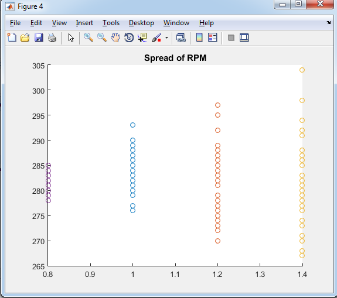

3. Experimental Data & Analysis¶
3.1. Scatter of RPM readings wrt QEI frequency¶
Aim : To find out the optimal QEI frequency which gives fast rpm measures as well as less spread or fluctuations in RPM calculation.
Expectation : We expect to determine the optimal and fastest frequency at which the feedback loop in the RPM control loop can be run. The bounds in which the system can get fast feedback as well as reliable.
GitHub repo : /GitHub repo link/
Plots :

A

B
| |rpmspread1| | |rpmspread2| |